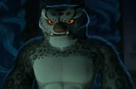
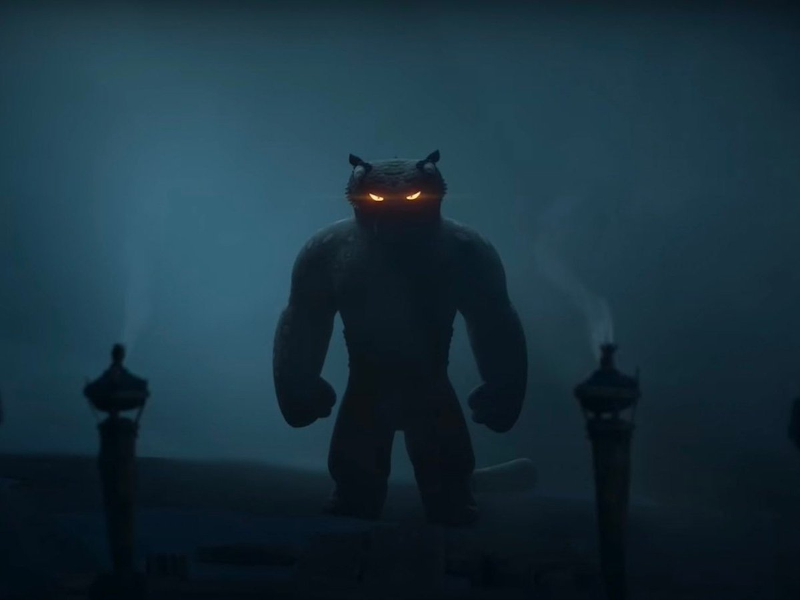
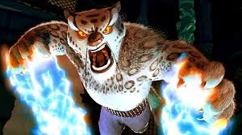
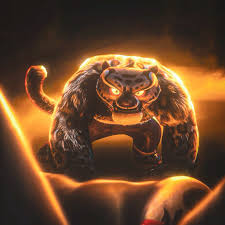

Quem é Tai Lung?
Tai Lung é o principal antagonista do primeiro filme da franquia Kung Fu Panda, produzido pela DreamWorks Animation.
Ele é um leopardo-das-neves extremamente poderoso, mestre em kung fu e antigo discípulo de Shifu.
Tai Lung foi criado para ser uma figura trágica: alguém que nasceu com enorme talento, mas acabou consumido pela obsessão, orgulho e desejo de reconhecimento.
História de Tai Lung
Desde pequeno, Tai Lung foi adotado e treinado por Shifu no Palácio de Jade.
Shifu acreditava que ele estava destinado a se tornar o lendário Guerreiro Dragão.
Tai Lung demonstrava habilidades absurdas ainda filhote:
- Força física fora do comum
- Velocidade impressionante
- Domínio avançado de técnicas marciais
- Inteligência estratégica
A recusa do Pergaminho do Dragão
O ponto decisivo da vida de Tai Lung aconteceu quando Oogway recusou entregá-lo o Pergaminho do Dragão.
Oogway percebeu escuridão e arrogância dentro dele. Para o velho mestre, Tai Lung buscava poder por ego, não por equilíbrio espiritual.
A rejeição destruiu emocionalmente Tai Lung.
Tomado pela raiva, ele atacou o Vale da Paz tentando pegar o pergaminho à força.